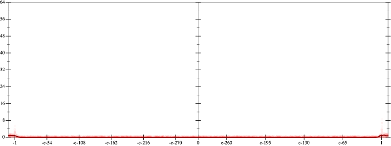
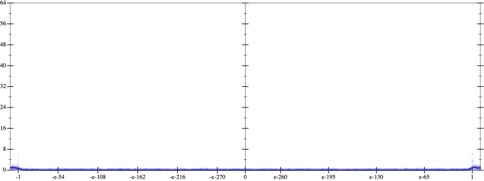
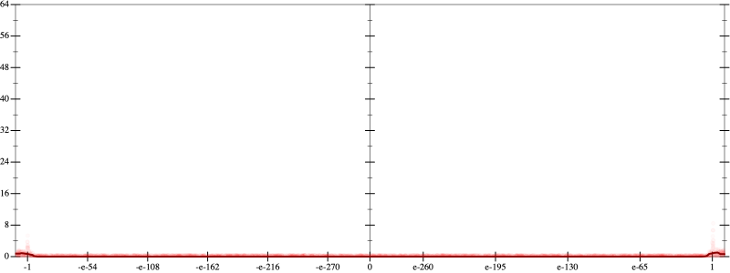
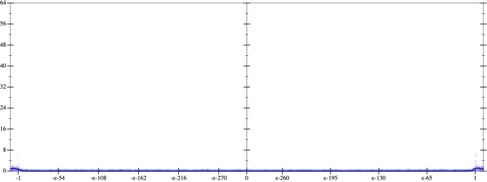

Initial program 0.0
\[\left(\left(\left(\left(-30240.0 + 302400.0 \cdot \left(x \cdot x\right)\right) + -403200.0 \cdot \left(\left(\left(x \cdot x\right) \cdot x\right) \cdot x\right)\right) + 161280.0 \cdot \left(\left(\left(\left(\left(x \cdot x\right) \cdot x\right) \cdot x\right) \cdot x\right) \cdot x\right)\right) + -23040.0 \cdot \left(\left(\left(\left(\left(\left(\left(x \cdot x\right) \cdot x\right) \cdot x\right) \cdot x\right) \cdot x\right) \cdot x\right) \cdot x\right)\right) + 1024.0 \cdot \left(\left(\left(\left(\left(\left(\left(\left(\left(x \cdot x\right) \cdot x\right) \cdot x\right) \cdot x\right) \cdot x\right) \cdot x\right) \cdot x\right) \cdot x\right) \cdot x\right)\]
Applied simplify0.0
\[\leadsto \color{blue}{\left(\left(\left(x \cdot x\right) \cdot \left(x \cdot x\right)\right) \cdot \left(-403200.0 + x \cdot \left(161280.0 \cdot x\right)\right) + \left(\left(\left(x \cdot x\right) \cdot \left(x \cdot x\right)\right) \cdot \left(\left(x \cdot x\right) \cdot \left(x \cdot x\right)\right)\right) \cdot \left(1024.0 \cdot \left(x \cdot x\right) + -23040.0\right)\right) + \left(x \cdot \left(x \cdot 302400.0\right) + -30240.0\right)}\]
- Using strategy
rm Applied pow20.0
\[\leadsto \left(\left(\left(x \cdot x\right) \cdot \left(x \cdot x\right)\right) \cdot \left(-403200.0 + x \cdot \left(161280.0 \cdot x\right)\right) + \left(\left(\left(x \cdot x\right) \cdot \left(x \cdot x\right)\right) \cdot \left(\left(x \cdot x\right) \cdot \color{blue}{{x}^{2}}\right)\right) \cdot \left(1024.0 \cdot \left(x \cdot x\right) + -23040.0\right)\right) + \left(x \cdot \left(x \cdot 302400.0\right) + -30240.0\right)\]
Applied pow20.0
\[\leadsto \left(\left(\left(x \cdot x\right) \cdot \left(x \cdot x\right)\right) \cdot \left(-403200.0 + x \cdot \left(161280.0 \cdot x\right)\right) + \left(\left(\left(x \cdot x\right) \cdot \left(x \cdot x\right)\right) \cdot \left(\color{blue}{{x}^{2}} \cdot {x}^{2}\right)\right) \cdot \left(1024.0 \cdot \left(x \cdot x\right) + -23040.0\right)\right) + \left(x \cdot \left(x \cdot 302400.0\right) + -30240.0\right)\]
Applied pow-prod-up0.0
\[\leadsto \left(\left(\left(x \cdot x\right) \cdot \left(x \cdot x\right)\right) \cdot \left(-403200.0 + x \cdot \left(161280.0 \cdot x\right)\right) + \left(\left(\left(x \cdot x\right) \cdot \left(x \cdot x\right)\right) \cdot \color{blue}{{x}^{\left(2 + 2\right)}}\right) \cdot \left(1024.0 \cdot \left(x \cdot x\right) + -23040.0\right)\right) + \left(x \cdot \left(x \cdot 302400.0\right) + -30240.0\right)\]
 
